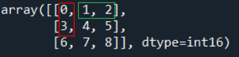

8.3.内存布局
import numpy as np
import pprint
import copy
Windows 10
Python 3.7.3 @ MSC v.1915 64 bit (AMD64)
Latest build date 2020.03.28
numpy version: 1.18.1
ndarray对象
NumPy提供了一个N维数组对象ndarray，它描述了同一类型的元素的集合。可以使用N个整数对元素进行索引。
ndarray中所有元素都是同质的1：每个元素占用相同大小的内存块，并且所有内存块的解释方式完全相同。ndarray内存块（数组中各元素）解释为特定数据类型所需的信息包含在data-type对象（dtype）之中。

图中显示了用于描述数组中数据的三个基本对象之间的关系：
-
ndarray本身
-
描述数组中单个固定大小元素的内存布局的data-type对象
-
访问数组的单个元素时返回的数组标量（Python对象）
ndarray类的实例由一个连续的一维计算机内存块（由数组或其他对象拥有）和一个索引方案组合而成，该索引方案将N个整数分别映射到内存块中N个元素的位置。索引可以变化的范围被数组的shape限制。
ndarray看上去似乎可以是多维的，但在内存中，ndarray是一维储存的。有许多方案将N维数组以一维数组的形式储存在内存中。其中numpy有两种储存方式：
-
元素按行顺序储存（C语言风格）
-
或者按列顺序储存（Fortran语言风格）

因此，如果要对一个ndarray以行为单位进行操作，最好以C-type的方式创建ndarray；如果要对一个ndarray以列为单位进行操作，则用Fortran方式。

内存布局
A = copy.deepcopy(np.arange(9, dtype=np.int16).reshape(3,3))
pprint.pprint(A)
array([[0, 1, 2],
[3, 4, 5],
[6, 7, 8]], dtype=int16)
| 属性（与数组内存布局有关） | A的属性值 | 描述 |
|---|---|---|
| A.dtype | dtype('int16') |
元素数据类型。A的每个元素是16bit大小的int型数据。 |
| A.ndim | 2 |
轴（维度）的个数。A有两个轴：0轴、1轴。 |
| A.shape | (3, 3) |
各个轴的大小。0轴有3个元素，1轴有3个元素。 |
| A.size | 9 |
数组的大小，有多少个元素。 |
| A.data | <memory at 0x000001B17A238A68> |
指向数组的数据的存储区。 |
| A.itemsize | 2 |
一个元素的长度，以字节为单位。16bit等于2字节。 |
| A.nbytes | 18 |
数组元素占据的总字节数。 |
| A.base | None |
如果内存来自其他对象，则以此为基础对象。 |
| A.flags | 有关数组内存布局的信息。 | |
| A.strides | (6, 2) |
一个整数元组，每个元素保存着每个轴上相邻两个元素的地址差。 即当某个轴的下标增加1 时，数据存储区中的指针增加的字节数。 |
可以从不同的角度(即布局)观察该array：
shape[1]
(=3)
┌───────────┐
┌ ┌───┬───┬───┐ ┐
│ │ 0 │ 1 │ 2 │ │
│ ├───┼───┼───┤ │
shape[0] │ │ 3 │ 4 │ 5 │ │ len(Z)
(=3) │ ├───┼───┼───┤ │ (=3)
│ │ 6 │ 7 │ 8 │ │
└ └───┴───┴───┘ ┘
展开的item layout
┌───┬───┬───┬───┬───┬───┬───┬───┬───┐
│ 0 │ 1 │ 2 │ 3 │ 4 │ 5 │ 6 │ 7 │ 8 │
└───┴───┴───┴───┴───┴───┴───┴───┴───┘
└───────────────────────────────────┘
A.size
(=9)
内存布局(C顺序)
strides[1]
(=2)
┌─────────────────────┐
┌ ┌──────────┬──────────┐ ┐
│ p+00: │ 00000000 │ 00000000 │ │
│ ├──────────┼──────────┤ │
│ p+02: │ 00000000 │ 00000001 │ │ strides[0]
│ ├──────────┼──────────┤ │ (=2x3)
│ p+04 │ 00000000 │ 00000010 │ │
│ ├──────────┼──────────┤ ┘
│ p+06 │ 00000000 │ 00000011 │
│ ├──────────┼──────────┤
A.nbytes │ p+08: │ 00000000 │ 00000100 │
(=3x3x2) │ ├──────────┼──────────┤
│ p+10: │ 00000000 │ 00000101 │
│ ├──────────┼──────────┤
│ p+12: │ 00000000 │ 00000110 │
│ ├──────────┼──────────┤
│ p+14: │ 00000000 │ 00000111 │
│ ├──────────┼──────────┤
│ p+16: │ 00000000 │ 00001000 │
└ └──────────┴──────────┘
└─────────────────────┘
A.itemsize
A.dtype.itemsize
(=2)
如果我们现在取一A的切片，结果是A的基本数组的一个视图：
V = A[::2,::2]
这样的视图是由shape，dtype 和strides指定的，因为仅凭dtype和shape不能推断出strides:
如果我们现在取一A的切片，结果是A的基本数组的一个视图：
V = A[::2,::2]
这样的视图是由shape，dtype 和strides指定的，因为仅凭dtype和shape不能推断出strides:
Item layout
shape[1]
(=2)
┌───────────┐
┌ ┌───┬───┬───┐ ┐
│ │ 0 │ │ 2 │ │ ┌───┬───┐
│ ├───┼───┼───┤ │ | 0 │ 2 │
shape[0] │ │ │ │ │ │ len(A) → ├───┼───┤
(=2) │ ├───┼───┼───┤ │ (=2) | 6 │ 8 │
│ │ 6 │ │ 8 │ │ └───┴───┘
└ └───┴───┴───┘ ┘
展开的item layout
┌───┬───┬───┬───┬───┬───┬───┬───┬───┐ ┌───┬───┬───┬───┐
│ 0 │ 1 │ 2 │ 3 │ 4 │ 5 │ 6 │ 7 │ 8 │ → │ 0 │ 2 │ 6 │ 8 │
└───┴───┴───┴───┴───┴───┴───┴───┴───┘ └───┴───┴───┴───┘
└─┬─┘ └─┬─┘ └─┬─┘ └─┬─┘
└───┬───┘ └───┬───┘
└───────────┬───────────┘
A.size
(=4)
内存布局(C顺序，大端序)
┌ ┌──────────┬──────────┐ ┐ ┐
┌─┤ p+00: │ 00000000 │ 00000000 │ │ │
│ └ ├──────────┼──────────┤ │ strides[1] │
┌─┤ p+02: │ │ │ │ (=4) │
│ │ ┌ ├──────────┼──────────┤ ┘ │
│ └─┤ p+04 │ 00000000 │ 00000010 │ │
│ └ ├──────────┼──────────┤ │ strides[0]
│ p+06: │ │ │ │ (=12)
│ ├──────────┼──────────┤ │
A.nbytes ─┤ p+08: │ │ │ │
(=8) │ ├──────────┼──────────┤ │
│ p+10: │ │ │ │
│ ┌ ├──────────┼──────────┤ ┘
│ ┌─┤ p+12: │ 00000000 │ 00000110 │
│ │ └ ├──────────┼──────────┤
└─┤ p+14: │ │ │
│ ┌ ├──────────┼──────────┤
└─┤ p+16: │ 00000000 │ 00001000 │
└ └──────────┴──────────┘
└─────────────────────┘
A.itemsize
A.dtype.itemsize
(=2)

可以直接修改ndarray对象的strides属性，改变ndarray的内存布局，但此时会修改原数组。
A = copy.deepcopy(np.arange(9, dtype=np.int16).reshape(3,3))
A.strides = (2,4)
pprint.pprint(A)
array([[0, 2, 4],
[1, 3, 5],
[2, 4, 6]], dtype=int16)
视图和副本
视图和副本是优化数值计算的重要概念。
在numpy中，可以用切片和花式索引（整数数组索引）来索引数据。切片将始终返回视图，而整数数组索引将返回一个副本。这种差异很重要，因为在切片情况下，修改视图会修改原数组，而在整数数组索引情况下则不是这样：
Z = np.zeros(9)
Z_view = Z[:3]
Z_view[...] = 1
print(Z)
[1. 1. 1. 0. 0. 0. 0. 0. 0.]
Z = np.zeros(9)
Z_copy = Z[[0,1,2]]
Z_copy[...] = 1
print(Z)
[0. 0. 0. 0. 0. 0. 0. 0. 0.]
因此，如果你需要反复用到某个花式索引，最好保留它的副本（特别是如果计算它很复杂）。如果您不确定索引的结果是视图还是副本，则可以检查base的结果。如果是None，那么结果就是副本：
Z = np.random.uniform(0,1,(5,5))
Z1 = Z[:3,:]
Z2 = Z[[0,1,2], :]
print(np.allclose(Z1,Z2))
True
print(Z1.base is Z)
True
print(Z2.base is Z)
False
print(Z2.base is None)
True
请注意，一些numpy函数在可能的情况下返回视图(例如，ravel)，而另一些函数总是返回副本(例如，flatten):
Z = np.zeros((5,5))
print(Z.ravel().base is Z)
True
print(Z[::2,::2].ravel().base is Z)
False
print(Z.flatten().base is Z)
False
可以通过ndarray.view()方法，从同一块内存区（储存着numpy数组的内存区）创建不同的dtype数组。即用不同的数值类型查看同一段内存中的二进制数据。它们使用的是同一块内存。 实际上，ndarray.view()方法是创建了一个视图。
A = np.array([[0,1,2],[3,4,5],[6,7,8]])
A_view = A.view(np.int32) # A_view 是视图
A_view.flags
C_CONTIGUOUS : True
F_CONTIGUOUS : False
OWNDATA : False
WRITEABLE : True
ALIGNED : True
WRITEBACKIFCOPY : False
UPDATEIFCOPY : False
如果我们直接修改原始数组的dtype，会达到同样的效果，但此时直接修改原始数组。
A.dtype = np.float32
Caution
通常应避免改变由切片、transposes、fortran排序等定义的数组的dtype 的大小，可能会引发错误，如下：
A = copy.deepcopy(np.arange(9, dtype=np.int16).reshape(3,3))
try:
A_view = A.view(np.int32)
except ValueError as e:
print("ValueError:", e)
ValueError: When changing to a larger dtype, its size must be a
divisor of the total size in bytes of the last axis of the array.
ndarray 数据类型
记不住这些NumPy的dtype也没关系，新手更是如此。通常只需要知道你所处理的数据的大致类型是浮点数、复数、整数、布尔值、字符串，还是普通的Python对象即可。当你需要控制数据在内存和磁盘中的存储方式时（尤其是对大数据集），那就得了解如何控制存储类型。
| 类型 | 类型代码 | 说明 |
|---|---|---|
| int8、 uint8 | i1、u1 | 有符号和无符号的8位（1个字节）整型 |
| int16、uint16 | i2、u2 | 有符号和无符号的16位（2个字节）整型 |
| int32、uint32 | i4、u4 | 有符号和无符号的32位（4个字节）整型 |
| int64、uint64 | i8、u8 | 有符号和无符号的64位（8个字节）整型 |
| float16 | f2 | 半精度浮点数 |
| float32 | f4或f | 标准的单精度浮点数。与C的float兼容 |
| float64 | f8或d | 标准的双精度浮点数。与C的double和Python 的float对象兼容 |
| float128 | f16 或 g | 扩展精度浮点数 |
| complex64、complex128、 | c8、 c16、 | 分别用两个32位、64位或128位浮点数表示的 |
| complex256 | c32 | 复数 |
| bool | ? | 存储True和False值的布尔类型 |
| object | O | Python对象类型 |
| string_ | S | 固定长度的字符串类型（每个字符1个字节）。 例如，要创建一个长度为10的字符串，应使用 S10 |
| unicode_ | U | 固定长度的Unicode类型（字节数由平台决定）。 跟字符串的定义方式一样（如U10) |
-
例外：Numpy的结构数组的元素可以不同质。 ↩